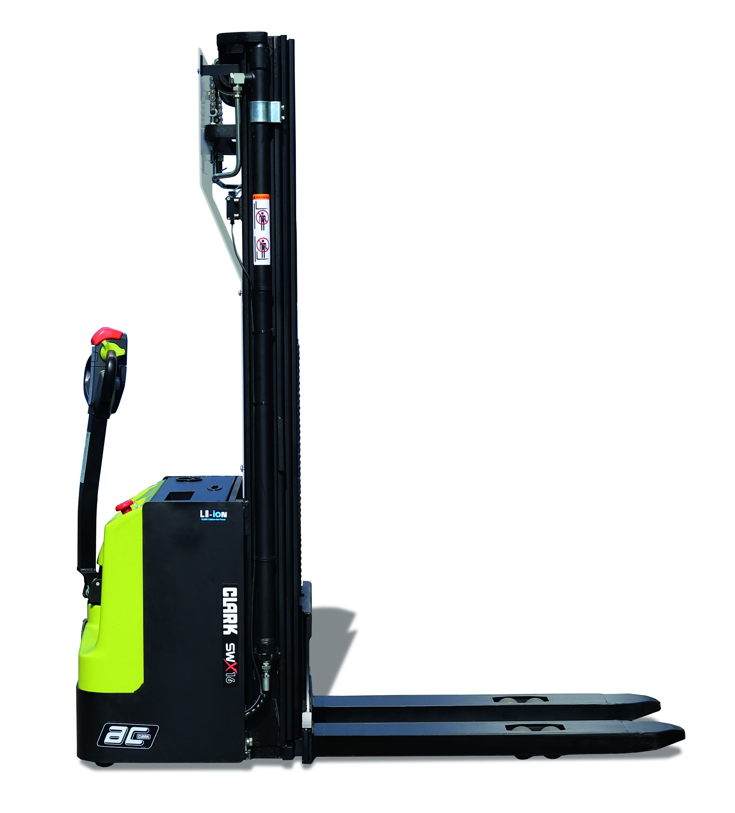
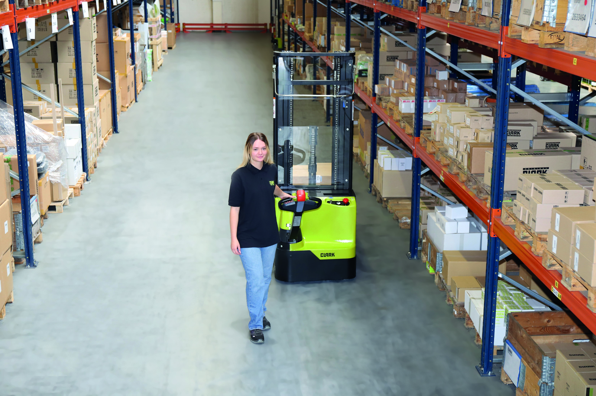
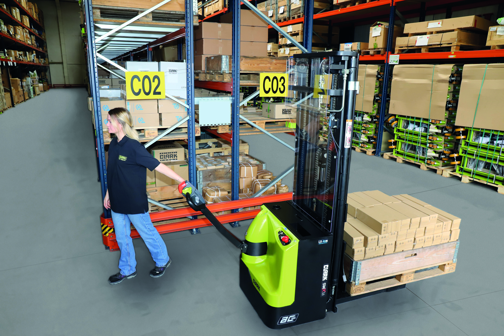
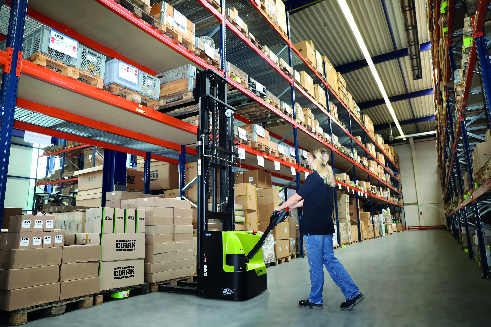
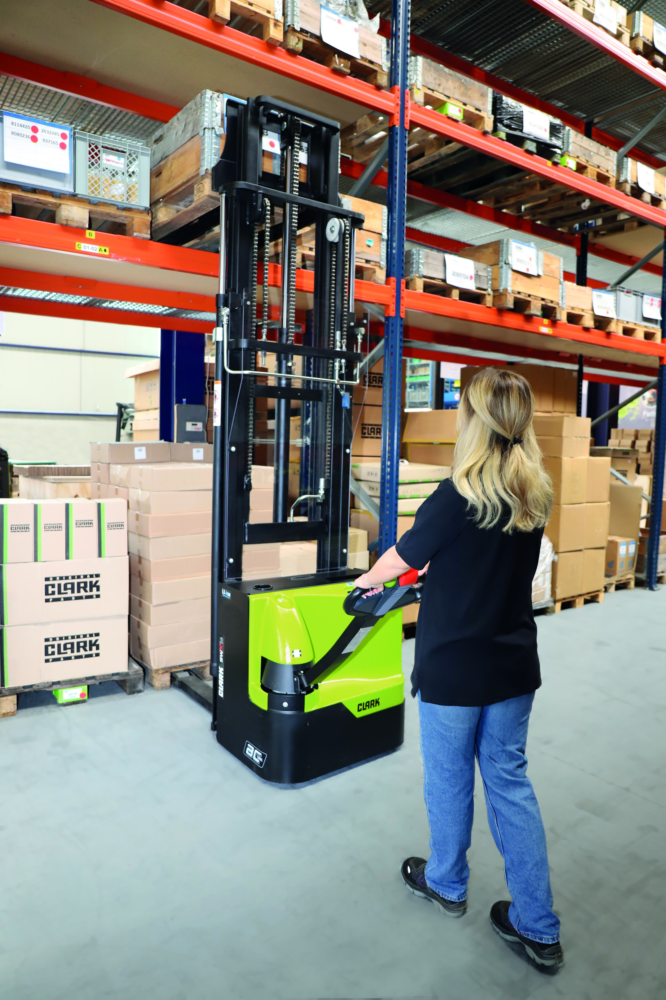
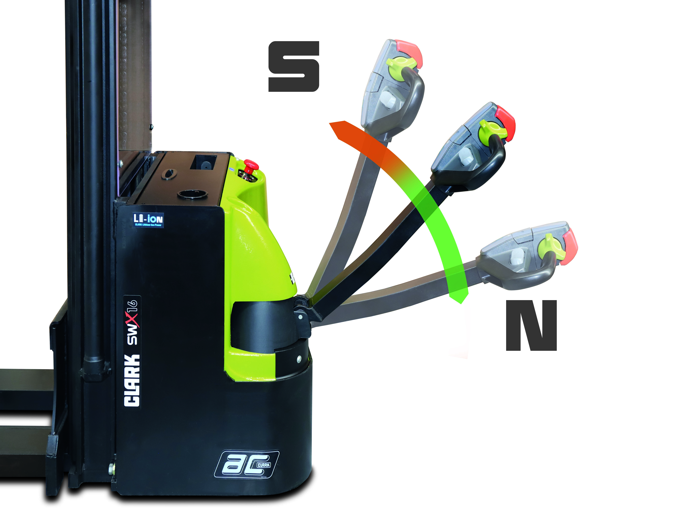
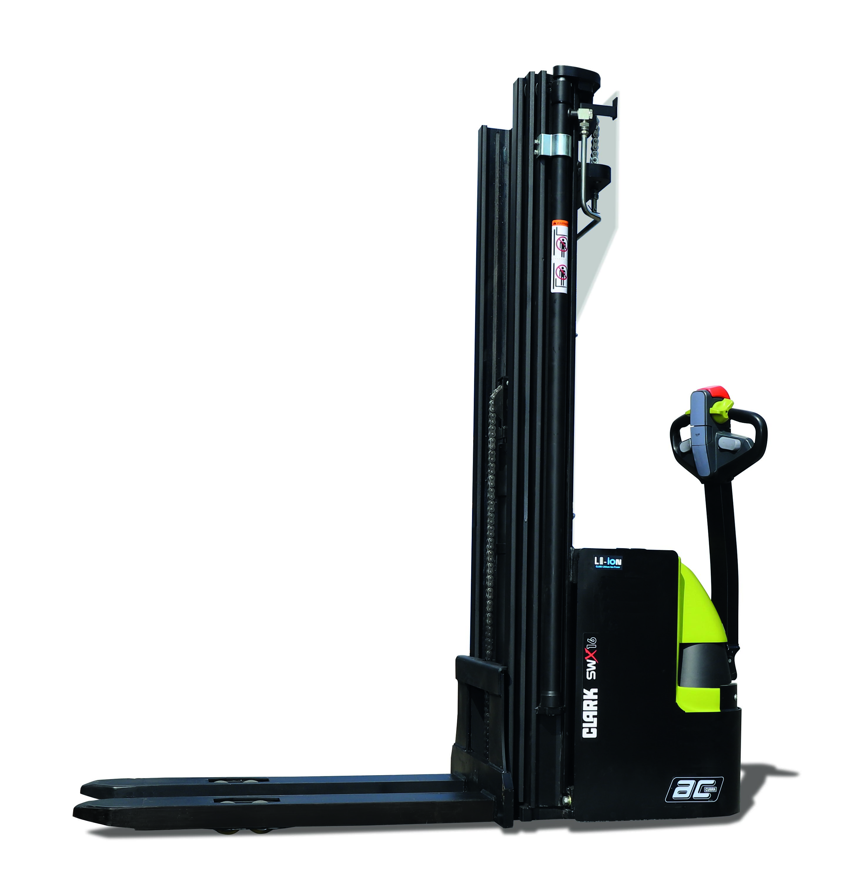

O stacker walkie da linha Clark com maior elevação disponível. Para CDs que verticalizaram ao máximo e precisam alcançar cada nível.
Solicitar proposta de compra
O supervisor de armazenagem de um CD farmacêutico em Goiânia tinha um problema que parecia simples: os racks chegavam a 4,8 metros, mas o stacker walkie anterior alcançava 4.200 mm. Os últimos dois níveis existiam no papel, mas na prática ficavam vazios. Cada palete que não subia para o nível 5 era espaço pago que não trabalhava.
A conta era direta: o galpão custava por metro cúbico. Os dois últimos níveis somavam 30% da capacidade vertical. E esses 30% estavam ociosos por limitação da máquina.
Stackers walkie convencionais chegam a 3.000 ou 4.000 mm. Para racks de 3 metros, isso é suficiente. Para racks de 4 a 5 metros, não é. Os níveis superiores ficam inacessíveis, ou exigem uma empilhadeira adicional só para o último nível.
O Clark SWX16 alcança 5.490 mm com a torre triplex e levantamento livre completo. Isso significa acesso a racks de até 4,8 a 5,0 metros de altura útil de armazenagem, com margem de trabalho para o operador posicionar a carga corretamente em cada nível.

A diferença prática para um CD com racks de 5 metros: um stacker que só alcança 4.000 mm desperdiça os dois últimos níveis. Um CD com 100 posições de rack perde 30 a 40 posições por limitação da máquina. Com o SWX16, todas as posições do rack estão acessíveis.
CDs farmacêuticos, alimentícios e de e-commerce têm em comum um perfil de uso intenso: muitos ciclos de elevação por turno, janelas de expedição que não aceitam paradas e time de manutenção enxuto. O stacker precisa estar disponível quando o operador precisar.

Um CD farmacêutico com 3 turnos e janela de expedição até as 22h não pode ter o stacker parado por bateria fraca. A Li-Ion com carga de oportunidade resolve isso: o SWX16 recarrega durante os momentos naturais de pausa da operação, sem interferir no fluxo de trabalho.
Motor AC e bateria Li-Ion operam normalmente em ambiente refrigerado. Para câmaras acima de -15°C, o SWX16 trabalha sem adaptação especial. Para temperaturas abaixo disso, consulte a Move Máquinas para confirmar a configuração adequada.

A linha de stackers walkie Clark tem três modelos com capacidades e mecanismos diferentes. Escolher o errado significa pagar por recurso que não usa ou operar com limitação que não deveria ter.
| Critério | SWX16 | SRX16 | PSX16 |
|---|---|---|---|
| Capacidade | 1.600 kg | 1.600 kg | 1.600 kg |
| Elevação máxima | 5.490 mm | 4.500 mm | 5.500 mm |
| Mecanismo de garfo | Fixo (contrabalançado) | Retrátil (avança e recua) | Fixo (contrabalançado) |
| Largura de corredor necessária | 2,5-3,5 m | 1,8-2,2 m (corredor estreito) | 2,5-3,5 m |
| Tecnologia de bateria | Li-Ion 24V | Li-Ion 24V | Verificar configuração |
| Levantamento livre | 150 mm | Sim (retrátil) | Verificar configuração |
| Indicado para | Corredor padrão, rack alto, alto ciclo | Corredor estreito que impede SWX16 | Elevação máxima disponível, corredor padrão |


O CD farmacêutico em Goiânia trocou o stacker anterior pelo Clark SWX16. Os dois últimos níveis do rack, que ficavam vazios há meses, passaram a ser usados normalmente. A capacidade de armazenagem subiu 28% sem mudar o galpão.
O supervisor que mediou a compra resumiu: "A limitação era da máquina, não do espaço. O espaço já estava lá."
| Especificação | Valor |
|---|---|
| Capacidade nominal | 1.600 kg |
| Tensão da bateria | 24V |
| Tecnologia de bateria | Li-Ion |
| Carga de oportunidade | 24/7 |
| Motor de tração | AC |
| Direção | Elétrica |
| Comprimento de garfo (L2) | 1.150 mm |
| Levantamento livre inicial | 150 mm |
| Elevação máxima | 5.490 mm (torre triplex) |
| Peso aproximado | ~1.720 kg |
| Tipo de operador | A pé (walkie) |
| Emissões | Zero |
| Normas | NR-11, NR-12 |
| Uso | Interno (piso plano) |

O SRX16 tem garfo retrátil e opera em corredores de 1,8 a 2,2 m. O SWX16 tem garfo fixo e precisa de corredor de 2,5 m ou mais, mas chega a 5.490 mm de elevação contra 4.500 mm do SRX16. O corredor disponível é o critério principal para escolher entre os dois.
Sim. Motor AC e bateria Li-Ion operam normalmente em ambiente refrigerado. Para câmaras abaixo de -15°C, consulte a Move Máquinas para confirmar a configuração adequada.
Levantamento livre é a distância que o garfo sobe antes de a torre começar a se estender para cima. Com 150 mm de levantamento livre, o SWX16 eleva os primeiros 150 mm sem aumentar a altura total da máquina. Isso permite passar por portais, câmaras com batentes baixos e travessas de rack sem risco de colisão.
Motor AC e Li-Ion reduzem significativamente a manutenção em relação a modelos DC com bateria convencional. Não há troca de escovas no motor, não há manutenção de bateria (sem água destilada, sem verificação de ácido). A revisão preventiva segue o cronograma Clark para horas operadas.
Sim, com carga de oportunidade entre turnos. A Li-Ion 24/7 permite conectar a qualquer momento sem dano à bateria. Entre turnos, a recarga parcial é suficiente para manter disponibilidade no turno seguinte sem precisar de bateria reserva.
Depende do estoque e configuração de torre no momento da compra. Solicite proposta pelo formulário e a Move Máquinas informa o prazo real em até 1 dia útil.
Informe os dados abaixo. A Move Máquinas retorna com proposta em até 1 dia útil.
Ou fale direto pelo WhatsApp: Chamar a Move Máquinas